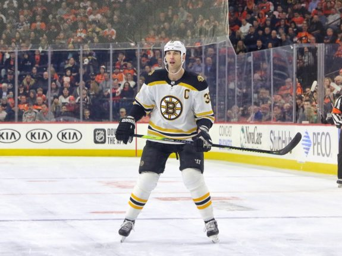
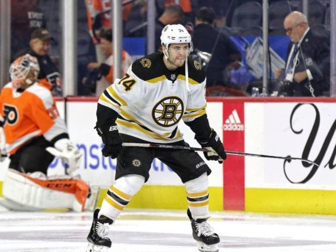

3 Bruins Key Free Agents Not Named Torey Krug
Every offseason, free agency causes sleepless nights for National Hockey League general managers and fans. There seem to be decisions that have to be made each summer that can set up a franchise to compete for Stanley Cup championships for years to come, or they can deter championship runs.
Boston Bruins general manager Don Sweeney will have several decisions that he will have to make once the offseason begins. Defenseman Torey Krug is the first and foremost decision that will have to made by Sweeney. There are also other free agents that the Bruins have this summer, and they’ll have hard decisions that they will have to make on the horizon. With that said, let’s take a look at the top-three Bruins free agents not named Torey Krug.
Zdeno Chara
At 43 years old, the Bruins captain is the oldest player in the NHL, but still is just as reliable as a player as he was when he signed as a free agent in 2006 from the Ottawa Senators.
Chara has recently been working on one-year deals with Boston and that should be no different if he decides to return. When the league shut down March 12 due to the worldwide coronavirus outbreak, there were 12 regular-season games left in the season. The Bruins on their way to securing the Presidents’ Trophy for what they hoped would be another deep playoff run.
Chara played in 68 of the Bruins’ 70 games this season averaging just over 21 minutes a night, so even at his age and over 1,000 games in a Boston uniform, fitness is not a problem. If the season returns this year and Boston can win a Stanley Cup, then it’s easy to see him retire. If the season doesn’t come back or the Bruins fail to win their first championship since 2011, it would be an easy decision to see him give it one more year. The decision will ultimately be his.
Jaroslav Halak
There has not been a better backup in the NHL for the last two years than Jaroslav Halak. He has gone 40-17-10 with a 2.36 goals-against average (GAA) and a .921 save percentage (SV%). He also has eight shutouts.

At 35 years old, Halak has been worth every penny of his current two-year, $5.5 million deal. This will be one of Sweeney’s toughest free-agent decisions. With the strong play of goaltenders Daniel Vladar and Max Legace in the American Hockey League this season with the Providence Bruins and recent signee Jeremy Swayman out of the University of Maine, there are cheaper options for the Bruins.
With current No. 1 goalie Tuukka Rask talking about possible retirement following next season after his contract expires, bringing in one of the young goalies as a backup next season could be the easy move for Sweeney. It would also be cheaper for other free-agent decisions the Bruins have.
Jake DeBrusk
The Bruins chose DeBrusk 14th overall in the first round of the 2015 draft and the left-wing was one goal short of his second straight 20-goal season when the NHL paused the season amid the coronavirus outbreak. He was the middle of three straight first-round picks the Bruins had five years ago.
A top-six forward, DeBrusk has settled in nicely on the Bruins second-ranked power-play unit, as well as David Krejci’s left-wing on the second line. It’s too early to give up on a home-grown talent and signing him to a two or three-year deal is the move here for Sweeney.
Sweeney will have other decisions to make with several other free agents this summer, but the biggest decisions are with Krug, Chara, DeBrusk and Halak. Moving forward, these decisions will play a big role in whether the Bruins can still compete with their core players within the current window they have.